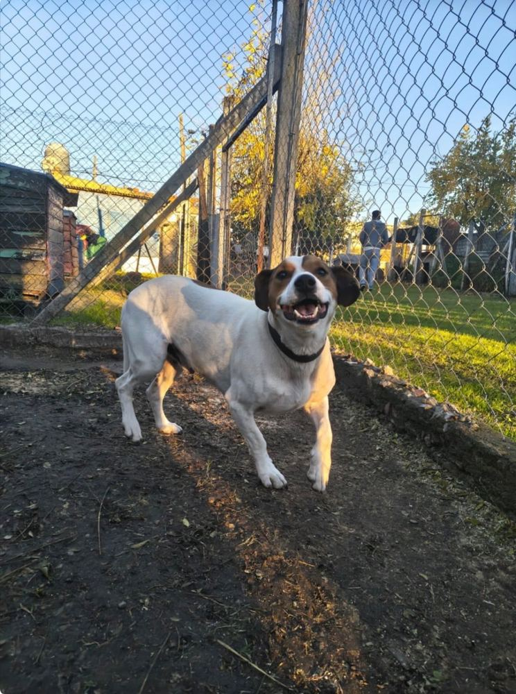

Documentación del sistema de diseño
Esta página documenta el caso, el análisis de referencia, las variables, los componentes y las decisiones técnicas detrás del sitio de APA La Plata.
Sobre el caso
APA La Plata (Asociación Protectora de Animales de La Plata) es una asociación civil sin fines de lucro fundada en 1982, dedicada al rescate, cuidado y reubicación de perros en situación de calle, abandono o maltrato en la ciudad de La Plata. Sostiene un refugio propio, trabajado por un grupo reducido de voluntarios y financiado por socios y donaciones, sin ayuda estatal.
Antes de este sitio, la organización tenía presencia activa en Instagram y Facebook, pero no un sitio propio: la información institucional y el listado de perros en adopción vivían dispersos en el feed de redes, se perdían con rapidez y no eran buscables ni filtrables.
Público destinatario: adoptantes potenciales, comunidad de seguidores en redes, donantes y socios, y voluntarios potenciales.
Objetivo de la presencia web: informar —centralizar la información institucional y el catálogo de perros en adopción— y convocar —facilitar el contacto de adoptantes y guiarlos a través del proceso—. Quedan fuera de alcance la gestión de donaciones en línea y el reclutamiento formal de voluntarios.
Análisis de referencia
En la Etapa 1.2 se deconstruyó un sitio de adopción de animales con estructura comparable, identificando sus cinco niveles atómicos y las inconsistencias del sistema para no repetirlas en el propio.
Niveles atómicos identificados
| Nivel | Qué se identificó |
|---|---|
| Variables | Color primario (verde institucional) y secundario (naranja de acento); tipografía redondeada para títulos y neutra para cuerpo; espaciado regular entre tarjetas. |
| Átomos | Botón "Adoptar", etiqueta de estado, ícono de pata, campo de búsqueda por nombre. |
| Moléculas | Tarjeta de animal, barra de filtros, formulario de contacto. |
| Organismos | Grilla de adopción, encabezado de navegación, pie de página. |
| Plantillas | Inicio, catálogo de adopción completo, detalle de un animal, contacto / cómo ayudar. |
Inconsistencias detectadas
Paleta sin neutros documentados (al menos 4 grises distintos para texto secundario); tipografía sin escala clara (títulos de tarjeta y de sección con el mismo tamaño); espaciado inconsistente entre escritorio y mobile en los formularios; y al menos tres variantes visuales de botón sin razón funcional.
Qué influyó en el sistema propio
Del análisis se retomaron los patrones que funcionaban —la tarjeta de animal como unidad repetible y la grilla con filtros— y se corrigieron sus inconsistencias: un sistema único de botones (BtnPrimario / BtnSecundario) en vez de variantes sueltas, una jerarquía tipográfica explícita (TextoPequeno → TextoDisplay) y una paleta documentada como custom properties, sin grises sueltos. La nomenclatura de aquel análisis (BtnAdoptar, EtiquetaEstado, TarjetaAnimal, BarraFiltros, GrillaAdopcion, EncabezadoPrincipal, PiePagina) se mantuvo como base y se extendió con el formato NombreClase_Datoextra para variantes (por ejemplo EtiquetaEstado_Disponible).
Variables del sistema
Paleta de colores
--color-primario#D4AF37 — marca, acentos--color-primario-oscuro#B3922A--color-secundario#2E8B57 — CTAs, navegación--color-secundario-oscuro#0B6E4F — hover--texto-base#1E1E1E — texto principal--texto-suave#6B655C — texto secundario--fondo-base#F7F3E3 — fondo general--fondo-tarjeta#FFFFFF — tarjetas--borde-suave#E7DFCB — bordesAdemás de esta paleta base, el sistema define variables semánticas derivadas para estados y acentos puntuales (--color-disponible-fondo, --color-enproceso-fondo, --color-favorito, --color-whatsapp, entre otras), todas declaradas junto a las anteriores en :root.
Escala tipográfica
Escala de espaciado
--espacio-xs · 8px
--espacio-sm · 16px
--espacio-md · 32px
--espacio-lg · 64px
Inventario de componentes
Átomos
 Quiero adoptar
Quiero adoptarMoléculas

Donantes y socios
Ejemplo de tarjeta con ícono.
¿Puedo colaborar sin adoptar?
Sí, como socio, donando o difundiendo.
Organismos
EncabezadoPrincipal y PiePagina ya están en vivo en esta misma página (arriba y al final); acá se muestran GrillaAdopcion y SeccionProceso a menor escala.

Conocé al perro.
Enviá tu consulta.
Decisiones técnicas
Grilla principal. Cada página se arma con secciones de ancho completo que alternan fondo (.Seccion / .Seccion--acento), y dentro de cada una un .Contenedor centra el contenido a un máximo de 1100px. La disposición interna de los organismos se resuelve con CSS Grid: .GrillaAdopcion pasa de 1 a 2 y 3 columnas según el breakpoint, .GrillaAdopcion-layout ubica la barra de filtros junto a la grilla en escritorio (3/12 y 9/12 columnas), y .PiePagina-contenedor distribuye las columnas del pie. Flexbox queda para la microcomposición dentro de cada componente, como el orden de los elementos de .TarjetaAnimal-cuerpo o la alineación de .EncabezadoPrincipal-contenedor.
Container queries. El componente .TarjetaAnimal declara container-type: inline-size y una regla @container (min-width: 340px) que reordena su contenido interno (.TarjetaAnimal-fila) de vertical a horizontal. Se eligió esta tarjeta porque es el único componente que se repite en contextos de ancho muy distinto dentro del propio sitio: la misma tarjeta ocupa una columna angosta en la grilla de 3 columnas del catálogo de escritorio y una columna ancha en la grilla de 1 columna de mobile. Una media query no podía resolverlo, porque en ambos casos el viewport no cambia de la misma forma que el espacio real disponible para la tarjeta.
Lo más difícil de resolver. Conciliar el contenido generado dinámicamente (el catálogo y el detalle de cada animal se arman con JavaScript a partir de un único array de datos) con HTML semántico real. La primera versión del detalle de un animal reemplazaba todo un contenedor genérico con innerHTML, así que el <article> y el <h1> del perro no existían en el documento hasta que el script corría. Se resolvió invirtiendo el enfoque: el HTML de animal.html ya trae un esqueleto estático con esos elementos y contenido de respaldo, y el script solo completa sus valores por id.